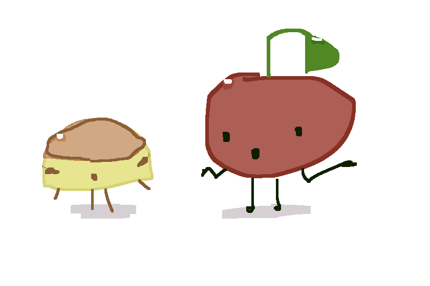
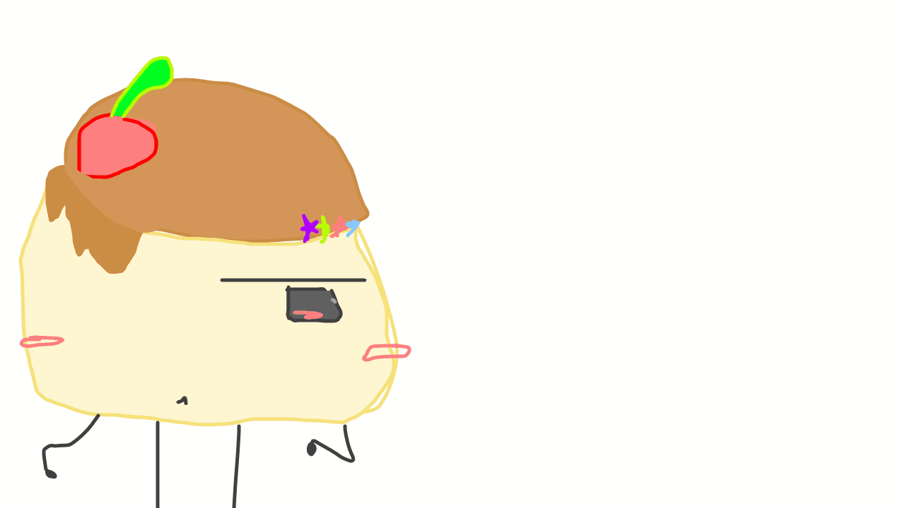
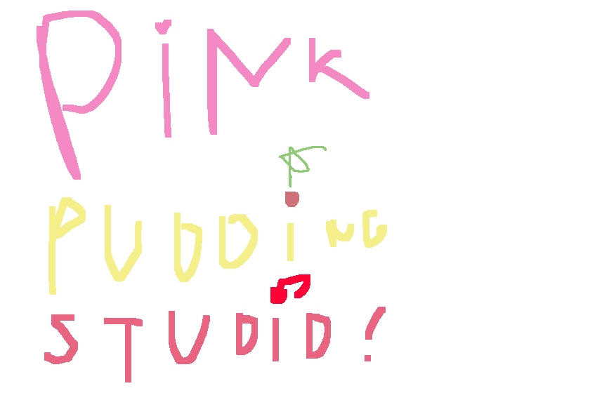
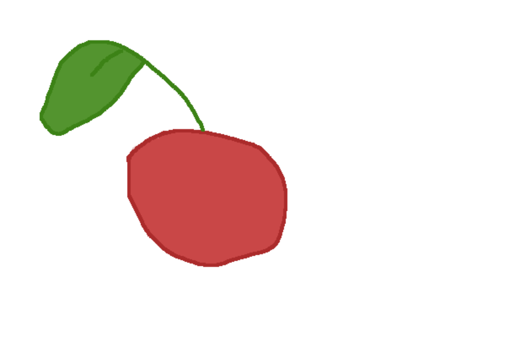

Pudya and Cherry
Pudya & Cherry Draft 🍮🍒
Just a sketch of Pudya and Cherry!
プジャとチェリーのかわいい落書き！

Pudya Animation Test
Pudya Blinking Test 🍮💦
A quick animation test where she blinks and her caramel drips.
プジャが瞬きをして、カラメルが滴る簡単なアニメーションのテスト。

Studio Logo Attempt / ロゴの試作
Concept Art / コンセプトアート 🎵
An attempt to draw the studio logo by hand. I love how the cherry and the note turned out!
スタジオのロゴを手書きで描く試み。さくらんぼと音符のデザインがお気に入りです！

cherry.png
Cherry Asset 🍒
Cherry's body image asset.
チェリーの体のアセット画像。

Scary Pudya / 怖いプジャ
Cut Content / 没データ 👁️
This was supposed to be a screamer after clicking Pudya's image 10 times, but I decided to scrap this idea.
プジャの画像を10回クリックしたときに出るスクリーマー（ビックリ要素）になる予定でしたが、このアイデアはボツにしました。